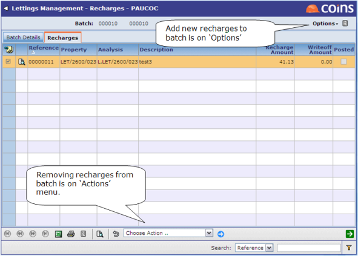

Once the recharges have been reviewed and set to a status of “Reviewed” they can then be batched and posted. This is done using Recharge Batch. Once a recharge batch has been created, you can then add or remove recharges from it. Use the Actions menu to remove recharges from a batch; use the Options menu to add new recharges to a batch:

Once the recharges have been added to the batch the recharge batch can then be posted. This will also create a 'Charge/Adjustment Batch' which will contain the transactions created from the recharge.